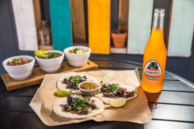

About LTS
LTS was fonded in . Our shop was built from a love of tacos🌮🌮🌮.We hope our shop adds a unique and interesting place to our little town.

LTS was fonded in . Our shop was built from a love of tacos🌮🌮🌮.We hope our shop adds a unique and interesting place to our little town.
| Tacos | Qty | Price |
|---|---|---|
| Crunchy | 1 | $1.50 |
| 2 | $2.50 | |
| 3 | $3.25 | |
| Soft | 1 | $2.00 |
| 2 | $3.50 | |
| 3 | $4.50 | |
| Chips & Salsa $2 | ||